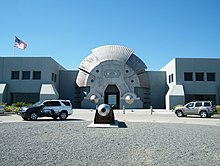

A Oakley foi iniciada em 1975 por Jim Jannard em sua garagem, com um
investimento inicial de U$300. O nome Oakley foi dado em homenagem
ao cão de Jim Jannard, um Setter inglês. Jannard inicialmente vendia
em eventos de motocross o que ele chamava de "The Oakley Grip"
Para conhecer intimamente o universo da marca OAKLEY
é preciso ter o privilégio, destinado a poucos, de poder
ingressar em seu headquarters. O futurístico quartel
general da marca, localizado em Foothill Ranch, um
polo industrial no interior da Califórnia, é absolutamente
diferente de tudo e tem a alma da OAKLEY.
Em 1984 a Oakley lança um óculos escuros chamado Eyeshade, que era
feito de plástico e tinha lentes removíveis. Esses óculos foram popularizados
por Greg LeMond, vencedor do Tour de France, e outros ciclistas profissionais
A Oakley começou a introduzir novos modelos de óculos de sol, entre eles o
Blade, o Razor Blade, Frogskins e Mumbos, que depois evoluiram para a série
de óculos M-Frame.

Sede Oakley
Oculos Eyeshade